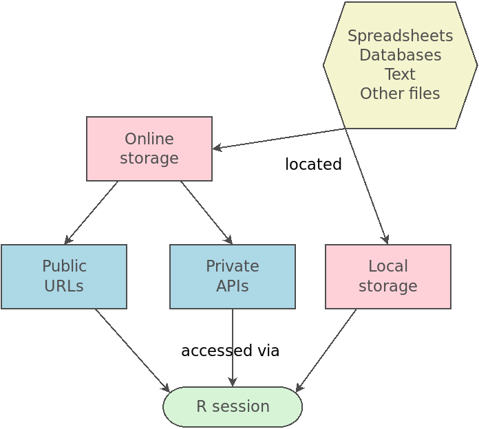
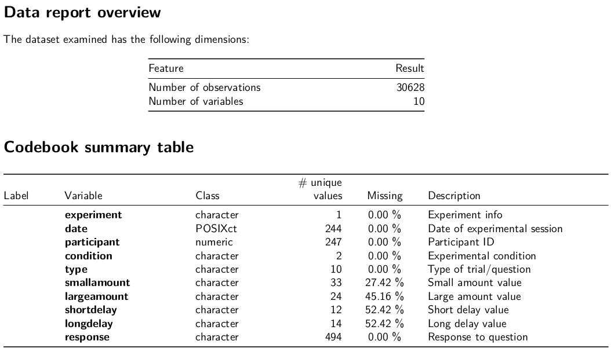
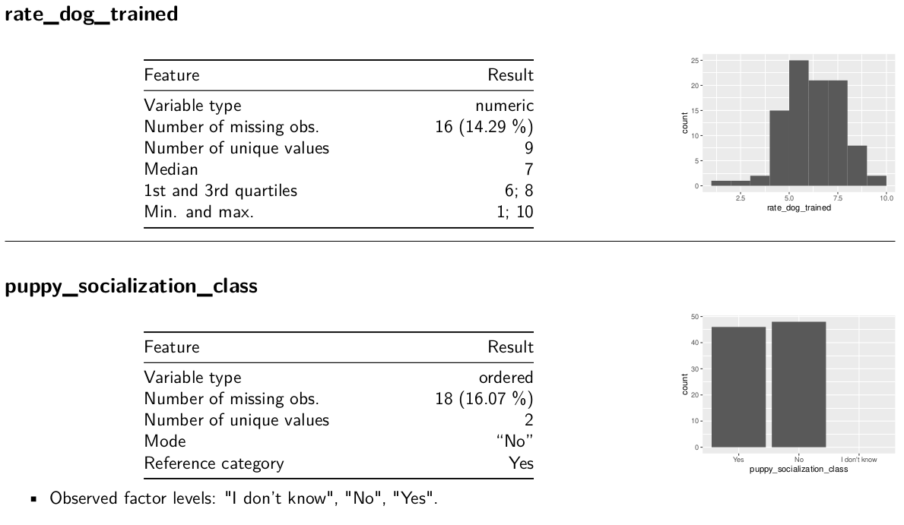

# A tibble: 195 × 17
Breed Affectionate With Fa…¹ Good With Young Chil…² `Good With Other Dogs`
<chr> <dbl> <dbl> <dbl>
1 Retriev… 5 5 5
2 French … 5 5 4
3 German … 5 5 3
4 Retriev… 5 5 5
5 Bulldogs 4 3 3
6 Poodles 5 5 3
7 Beagles 3 5 5
8 Rottwei… 5 3 3
9 Pointer… 5 5 4
10 Dachshu… 5 3 4
# ℹ 185 more rows
# ℹ abbreviated names: ¹`Affectionate With Family`, ²`Good With Young Children`
# ℹ 13 more variables: `Shedding Level` <dbl>, `Coat Grooming Frequency` <dbl>,
# `Drooling Level` <dbl>, `Coat Type` <chr>, `Coat Length` <chr>,
# `Openness To Strangers` <dbl>, `Playfulness Level` <dbl>,
# `Watchdog/Protective Nature` <dbl>, `Adaptability Level` <dbl>,
# `Trainability Level` <dbl>, `Energy Level` <dbl>, `Barking Level` <dbl>, …Validating data
Jeff Stevens
2025-02-10
Review
Mental model of importing data
Set up
Import dog breed traits data
Set up
Also load {palmerpenguins} for access to penguins
Data validation
Data validation
Check that your imported data are correct/valid/reasonable
Dimensions
Data types
Ranges and constraints
Allowed values (code lists)
Column dependencies
Completeness/uniqueness
Missing values
Dimensions
Does the data frame have the correct dimensions?
How do we view dimensions of a data frame?
dim(mydf)[1] 195 17How do we check if dimensions match a specific set of values?
Data types
Do the data columns have the correct data types?
How do we check all data types of a data frame?
str(mydf)spc_tbl_ [195 × 17] (S3: spec_tbl_df/tbl_df/tbl/data.frame)
$ Breed : chr [1:195] "Retrievers (Labrador)" "French Bulldogs" "German Shepherd Dogs" "Retrievers (Golden)" ...
$ Affectionate With Family : num [1:195] 5 5 5 5 4 5 3 5 5 5 ...
$ Good With Young Children : num [1:195] 5 5 5 5 3 5 5 3 5 3 ...
$ Good With Other Dogs : num [1:195] 5 4 3 5 3 3 5 3 4 4 ...
$ Shedding Level : num [1:195] 4 3 4 4 3 1 3 3 3 2 ...
$ Coat Grooming Frequency : num [1:195] 2 1 2 2 3 4 2 1 2 2 ...
$ Drooling Level : num [1:195] 2 3 2 2 3 1 1 3 2 2 ...
$ Coat Type : chr [1:195] "Double" "Smooth" "Double" "Double" ...
$ Coat Length : chr [1:195] "Short" "Short" "Medium" "Medium" ...
$ Openness To Strangers : num [1:195] 5 5 3 5 4 5 3 3 4 4 ...
$ Playfulness Level : num [1:195] 5 5 4 4 4 5 4 4 4 4 ...
$ Watchdog/Protective Nature: num [1:195] 3 3 5 3 3 5 2 5 4 4 ...
$ Adaptability Level : num [1:195] 5 5 5 5 3 4 4 4 4 4 ...
$ Trainability Level : num [1:195] 5 4 5 5 4 5 3 5 5 4 ...
$ Energy Level : num [1:195] 5 3 5 3 3 4 4 3 5 3 ...
$ Barking Level : num [1:195] 3 1 3 1 2 4 4 1 3 5 ...
$ Mental Stimulation Needs : num [1:195] 4 3 5 4 3 5 4 5 5 3 ...
- attr(*, "spec")=
.. cols(
.. Breed = col_character(),
.. `Affectionate With Family` = col_double(),
.. `Good With Young Children` = col_double(),
.. `Good With Other Dogs` = col_double(),
.. `Shedding Level` = col_double(),
.. `Coat Grooming Frequency` = col_double(),
.. `Drooling Level` = col_double(),
.. `Coat Type` = col_character(),
.. `Coat Length` = col_character(),
.. `Openness To Strangers` = col_double(),
.. `Playfulness Level` = col_double(),
.. `Watchdog/Protective Nature` = col_double(),
.. `Adaptability Level` = col_double(),
.. `Trainability Level` = col_double(),
.. `Energy Level` = col_double(),
.. `Barking Level` = col_double(),
.. `Mental Stimulation Needs` = col_double()
.. )
- attr(*, "problems")=<externalptr> Data types
Do the data columns have the correct data types?
Test specific data type for individual columns
is.numeric(mydf$`Drooling Level`)[1] TRUERanges and constraints
Do numerical column values have the correct range and/or other constraints?
Note
Useful to check for Likert scales and measures of age (especially coming out of Qualtrics).
range(mydf$`Drooling Level`)[1] 1 5Allowed values (code lists)
Do categorical column values have the correct possible values?
Note
Useful to check for when users can enter text instead of choose options.
(recorded_coats <- unique(mydf$`Coat Type`))[1] "Double" "Smooth" "Curly" "Silky" "Wavy" "Wiry" "Hairless"
[8] "Rough" "Corded" Column dependencies
Do column dependencies match up?
E.g., if “other” is selected in choice column, does other column have an entry?
df$choice == "other" & !is.na(df$other)Multiple conditional statements
& is the conditional AND where both individual conditional statements must be true for the overall return value to be TRUE
a <- 7
a > 5 & a < 10[1] TRUECompleteness
Are all expected observations included?
How do we test this?
observed_subjects %in% expected_subjectsUniqueness
Are there duplicate observations?
duplicated(mydf$Breed) [1] FALSE FALSE FALSE FALSE FALSE FALSE FALSE FALSE FALSE FALSE FALSE FALSE
[13] FALSE FALSE FALSE FALSE FALSE FALSE FALSE FALSE FALSE FALSE FALSE FALSE
[25] FALSE FALSE FALSE FALSE FALSE FALSE FALSE FALSE FALSE FALSE FALSE FALSE
[37] FALSE FALSE FALSE FALSE FALSE FALSE FALSE FALSE FALSE FALSE FALSE FALSE
[49] FALSE FALSE FALSE FALSE FALSE FALSE FALSE FALSE FALSE FALSE FALSE FALSE
[61] FALSE FALSE FALSE FALSE FALSE FALSE FALSE FALSE FALSE FALSE FALSE FALSE
[73] FALSE FALSE FALSE FALSE FALSE FALSE FALSE FALSE FALSE FALSE FALSE FALSE
[85] FALSE FALSE FALSE FALSE FALSE FALSE FALSE FALSE FALSE FALSE FALSE FALSE
[97] FALSE FALSE FALSE FALSE FALSE FALSE FALSE FALSE FALSE FALSE FALSE FALSE
[109] FALSE FALSE FALSE FALSE FALSE FALSE FALSE FALSE FALSE FALSE FALSE FALSE
[121] FALSE FALSE FALSE FALSE FALSE FALSE FALSE FALSE FALSE FALSE FALSE FALSE
[133] FALSE FALSE FALSE FALSE FALSE FALSE FALSE FALSE FALSE FALSE FALSE FALSE
[145] FALSE FALSE FALSE FALSE FALSE FALSE FALSE FALSE FALSE FALSE FALSE FALSE
[157] FALSE FALSE FALSE FALSE FALSE FALSE FALSE FALSE FALSE FALSE FALSE FALSE
[169] FALSE FALSE FALSE FALSE FALSE FALSE FALSE FALSE FALSE FALSE FALSE FALSE
[181] FALSE FALSE FALSE FALSE FALSE FALSE FALSE FALSE FALSE FALSE FALSE FALSE
[193] FALSE FALSE FALSEmydf[duplicated(mydf$Breed), ]# A tibble: 0 × 17
# ℹ 17 variables: Breed <chr>, Affectionate With Family <dbl>,
# Good With Young Children <dbl>, Good With Other Dogs <dbl>,
# Shedding Level <dbl>, Coat Grooming Frequency <dbl>, Drooling Level <dbl>,
# Coat Type <chr>, Coat Length <chr>, Openness To Strangers <dbl>,
# Playfulness Level <dbl>, Watchdog/Protective Nature <dbl>,
# Adaptability Level <dbl>, Trainability Level <dbl>, Energy Level <dbl>,
# Barking Level <dbl>, Mental Stimulation Needs <dbl>Missing values
Are there individual vectors with missing data?
is.na(penguins$bill_length_mm) [1] FALSE FALSE FALSE TRUE FALSE FALSE FALSE FALSE FALSE FALSE FALSE FALSE
[13] FALSE FALSE FALSE FALSE FALSE FALSE FALSE FALSE FALSE FALSE FALSE FALSE
[25] FALSE FALSE FALSE FALSE FALSE FALSE FALSE FALSE FALSE FALSE FALSE FALSE
[37] FALSE FALSE FALSE FALSE FALSE FALSE FALSE FALSE FALSE FALSE FALSE FALSE
[49] FALSE FALSE FALSE FALSE FALSE FALSE FALSE FALSE FALSE FALSE FALSE FALSE
[61] FALSE FALSE FALSE FALSE FALSE FALSE FALSE FALSE FALSE FALSE FALSE FALSE
[73] FALSE FALSE FALSE FALSE FALSE FALSE FALSE FALSE FALSE FALSE FALSE FALSE
[85] FALSE FALSE FALSE FALSE FALSE FALSE FALSE FALSE FALSE FALSE FALSE FALSE
[97] FALSE FALSE FALSE FALSE FALSE FALSE FALSE FALSE FALSE FALSE FALSE FALSE
[109] FALSE FALSE FALSE FALSE FALSE FALSE FALSE FALSE FALSE FALSE FALSE FALSE
[121] FALSE FALSE FALSE FALSE FALSE FALSE FALSE FALSE FALSE FALSE FALSE FALSE
[133] FALSE FALSE FALSE FALSE FALSE FALSE FALSE FALSE FALSE FALSE FALSE FALSE
[145] FALSE FALSE FALSE FALSE FALSE FALSE FALSE FALSE FALSE FALSE FALSE FALSE
[157] FALSE FALSE FALSE FALSE FALSE FALSE FALSE FALSE FALSE FALSE FALSE FALSE
[169] FALSE FALSE FALSE FALSE FALSE FALSE FALSE FALSE FALSE FALSE FALSE FALSE
[181] FALSE FALSE FALSE FALSE FALSE FALSE FALSE FALSE FALSE FALSE FALSE FALSE
[193] FALSE FALSE FALSE FALSE FALSE FALSE FALSE FALSE FALSE FALSE FALSE FALSE
[205] FALSE FALSE FALSE FALSE FALSE FALSE FALSE FALSE FALSE FALSE FALSE FALSE
[217] FALSE FALSE FALSE FALSE FALSE FALSE FALSE FALSE FALSE FALSE FALSE FALSE
[229] FALSE FALSE FALSE FALSE FALSE FALSE FALSE FALSE FALSE FALSE FALSE FALSE
[241] FALSE FALSE FALSE FALSE FALSE FALSE FALSE FALSE FALSE FALSE FALSE FALSE
[253] FALSE FALSE FALSE FALSE FALSE FALSE FALSE FALSE FALSE FALSE FALSE FALSE
[265] FALSE FALSE FALSE FALSE FALSE FALSE FALSE TRUE FALSE FALSE FALSE FALSE
[277] FALSE FALSE FALSE FALSE FALSE FALSE FALSE FALSE FALSE FALSE FALSE FALSE
[289] FALSE FALSE FALSE FALSE FALSE FALSE FALSE FALSE FALSE FALSE FALSE FALSE
[301] FALSE FALSE FALSE FALSE FALSE FALSE FALSE FALSE FALSE FALSE FALSE FALSE
[313] FALSE FALSE FALSE FALSE FALSE FALSE FALSE FALSE FALSE FALSE FALSE FALSE
[325] FALSE FALSE FALSE FALSE FALSE FALSE FALSE FALSE FALSE FALSE FALSE FALSE
[337] FALSE FALSE FALSE FALSE FALSE FALSE FALSE FALSEpenguins[is.na(penguins$bill_length_mm), ]# A tibble: 2 × 8
species island bill_length_mm bill_depth_mm flipper_length_mm body_mass_g
<fct> <fct> <dbl> <dbl> <int> <int>
1 Adelie Torgersen NA NA NA NA
2 Gentoo Biscoe NA NA NA NA
# ℹ 2 more variables: sex <fct>, year <int>Missing values
Do any columns have missing data?
complete.cases() returns logical vector of which cases have no missing values
penguins[!complete.cases(penguins), ]# A tibble: 11 × 8
species island bill_length_mm bill_depth_mm flipper_length_mm body_mass_g
<fct> <fct> <dbl> <dbl> <int> <int>
1 Adelie Torgersen NA NA NA NA
2 Adelie Torgersen 34.1 18.1 193 3475
3 Adelie Torgersen 42 20.2 190 4250
4 Adelie Torgersen 37.8 17.1 186 3300
5 Adelie Torgersen 37.8 17.3 180 3700
6 Adelie Dream 37.5 18.9 179 2975
7 Gentoo Biscoe 44.5 14.3 216 4100
8 Gentoo Biscoe 46.2 14.4 214 4650
9 Gentoo Biscoe 47.3 13.8 216 4725
10 Gentoo Biscoe 44.5 15.7 217 4875
11 Gentoo Biscoe NA NA NA NA
# ℹ 2 more variables: sex <fct>, year <int>Missing values
What are the index values of the observations with missing data?
which() returns which indices are TRUE
which(!complete.cases(penguins)) [1] 4 9 10 11 12 48 179 219 257 269 272Summarizing data
Summarizing data
head()
head(mydf)# A tibble: 6 × 17
Breed Affectionate With Fa…¹ Good With Young Chil…² `Good With Other Dogs`
<chr> <dbl> <dbl> <dbl>
1 Retrieve… 5 5 5
2 French B… 5 5 4
3 German S… 5 5 3
4 Retrieve… 5 5 5
5 Bulldogs 4 3 3
6 Poodles 5 5 3
# ℹ abbreviated names: ¹`Affectionate With Family`, ²`Good With Young Children`
# ℹ 13 more variables: `Shedding Level` <dbl>, `Coat Grooming Frequency` <dbl>,
# `Drooling Level` <dbl>, `Coat Type` <chr>, `Coat Length` <chr>,
# `Openness To Strangers` <dbl>, `Playfulness Level` <dbl>,
# `Watchdog/Protective Nature` <dbl>, `Adaptability Level` <dbl>,
# `Trainability Level` <dbl>, `Energy Level` <dbl>, `Barking Level` <dbl>,
# `Mental Stimulation Needs` <dbl>Summarizing data
glimpse()
tibble::glimpse(mydf)Rows: 195
Columns: 17
$ Breed <chr> "Retrievers (Labrador)", "French Bulldogs…
$ `Affectionate With Family` <dbl> 5, 5, 5, 5, 4, 5, 3, 5, 5, 5, 5, 3, 5, 4,…
$ `Good With Young Children` <dbl> 5, 5, 5, 5, 3, 5, 5, 3, 5, 3, 3, 5, 5, 5,…
$ `Good With Other Dogs` <dbl> 5, 4, 3, 5, 3, 3, 5, 3, 4, 4, 4, 3, 3, 3,…
$ `Shedding Level` <dbl> 4, 3, 4, 4, 3, 1, 3, 3, 3, 2, 4, 3, 1, 2,…
$ `Coat Grooming Frequency` <dbl> 2, 1, 2, 2, 3, 4, 2, 1, 2, 2, 2, 2, 5, 2,…
$ `Drooling Level` <dbl> 2, 3, 2, 2, 3, 1, 1, 3, 2, 2, 1, 1, 1, 3,…
$ `Coat Type` <chr> "Double", "Smooth", "Double", "Double", "…
$ `Coat Length` <chr> "Short", "Short", "Medium", "Medium", "Sh…
$ `Openness To Strangers` <dbl> 5, 5, 3, 5, 4, 5, 3, 3, 4, 4, 4, 3, 5, 4,…
$ `Playfulness Level` <dbl> 5, 5, 4, 4, 4, 5, 4, 4, 4, 4, 4, 4, 4, 4,…
$ `Watchdog/Protective Nature` <dbl> 3, 3, 5, 3, 3, 5, 2, 5, 4, 4, 5, 3, 5, 4,…
$ `Adaptability Level` <dbl> 5, 5, 5, 5, 3, 4, 4, 4, 4, 4, 4, 3, 5, 3,…
$ `Trainability Level` <dbl> 5, 4, 5, 5, 4, 5, 3, 5, 5, 4, 4, 5, 4, 4,…
$ `Energy Level` <dbl> 5, 3, 5, 3, 3, 4, 4, 3, 5, 3, 4, 5, 4, 4,…
$ `Barking Level` <dbl> 3, 1, 3, 1, 2, 4, 4, 1, 3, 5, 4, 3, 4, 3,…
$ `Mental Stimulation Needs` <dbl> 4, 3, 5, 4, 3, 5, 4, 5, 5, 3, 4, 5, 4, 4,…Summarizing data
summary()
summary(penguins) species island bill_length_mm bill_depth_mm
Adelie :152 Biscoe :168 Min. :32.10 Min. :13.10
Chinstrap: 68 Dream :124 1st Qu.:39.23 1st Qu.:15.60
Gentoo :124 Torgersen: 52 Median :44.45 Median :17.30
Mean :43.92 Mean :17.15
3rd Qu.:48.50 3rd Qu.:18.70
Max. :59.60 Max. :21.50
NA's :2 NA's :2
flipper_length_mm body_mass_g sex year
Min. :172.0 Min. :2700 female:165 Min. :2007
1st Qu.:190.0 1st Qu.:3550 male :168 1st Qu.:2007
Median :197.0 Median :4050 NA's : 11 Median :2008
Mean :200.9 Mean :4202 Mean :2008
3rd Qu.:213.0 3rd Qu.:4750 3rd Qu.:2009
Max. :231.0 Max. :6300 Max. :2009
NA's :2 NA's :2 Excluding data
{excluder}
Working with Qualtrics data can be … challenging.
{excluder} helps:
- get rid of initial rows with
remove_label_rows() - use Qualtrics labels as column names with
use_labels() - deidentify data with
deidentify() - view, mark, or exclude data based on: preview status, survey progress, survey completion time, IP address country, geolocation, duplicate IP address, and screen resolution
Codebooks
{dataReporter}
{dataReporter}
{dataReporter}
dataReporter::makeCodebook(mydf3, file = here::here("06_codebook.Rmd"))